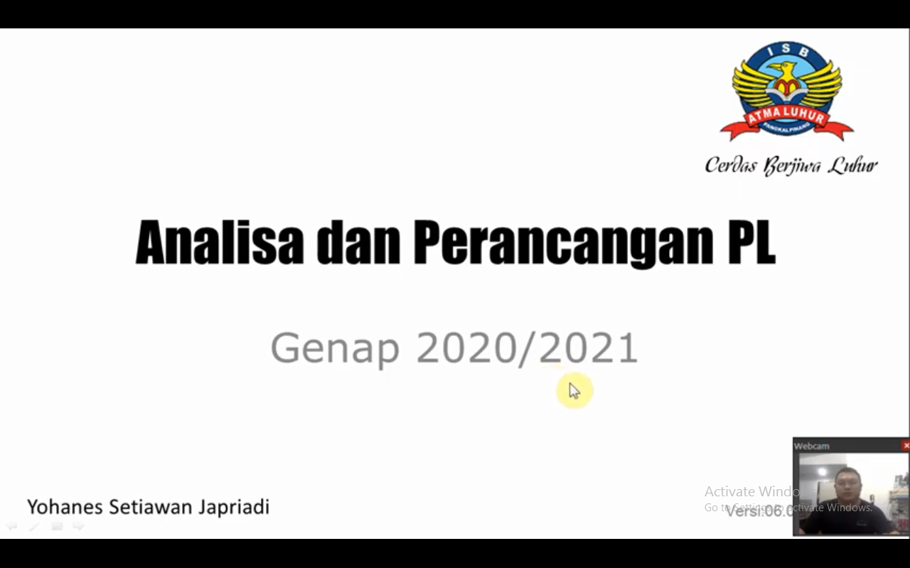

Nim : 1811500096
Nama : Teuku Reynaldi
Kelompok : TI6J
Hasil Saduran:
1. Menjelaskan tentang Kesantunan dan Sikap Komunikasi yang Baik Terhadap Siapapun agar menjadi mahasiswa yang Cerdas Berjiwa Luhur.
2. Penjelasan tata tertib perkuliahan dan kontrak perkuliahan.
3. Penjelasan dalam hal menjalankan sistem perkuliahan untuk mata kuliah Analisa & Perancangan Perangkat Lunak untuk kehadiran & nilai tugas individu menggunakan github.com , guna memudahkan dalam penyaduran materi perkuliahan tiap pekan
dan sebagai bukti kehadiran.
4. Pengantar singkat tentang materi yang akan dipelajari selama 1 Semester.
5. Mendapat tugas untuk membuat kelompok yang terdiri dari 3 orang mahasiswa guna dapat mempresentasikan hasil belajar dari mata kuliah Analisa & Perancangan Perangkat Lunak.
